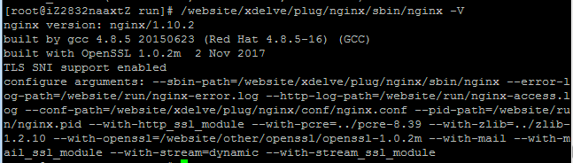

sendmail收件配置的限制比较繁琐，因此我使用nginx做反向代理控制收邮件。主要控制收件来源的频率，以及流量拦截，否则裸奔的sendmail还是比较危险的。
首先把sendmail的端口改掉（原本29876的地方写的是smtp）：
DAEMON_OPTIONS(`Port=29876,Addr=0.0.0.0, Name=MTA)dnl修改之后
m4 /etc/mail/sendmail.mc>/etc/mail/sendmail.cf并重启sendmail，sendmail配置可参考 https://www.xdelve.com/usershare/fb0044daf15b007bda187891b53d9d97/19dw.asp
防火墙开启之后，对外开放的25端口交给nginx，29876作为内部端口使用。
然后就是nginx的配置了，首先确定nginx的配置信息，核心模块是--with-stream=dynamic,--with-stream_ssl_module,--with-mail=dynamic,--with-mail_ssl_module：

nginx的配置文件设置代理信息，暂时只做一个代理，不进行身份验证：
加上这段，用于代理到内部邮件服务器：
load_module /usr/local/nginx/modules/ngx_stream_module.so;
stream {
upstream smtp-server{
server xdelve.com:29876 weight=3;
}
server {
listen 2525;
proxy_pass smtp-server;
}
}
mail {
# See /etc/nginx/sites-available/mail_auth
auth_http localhost:8025/mail_auth/;
proxy on;
proxy_pass_error_message on;
smtp_auth none;
smtp_capabilities "SIZE 10485760" 8BITMIME ENHANCEDSTATUSCODES DSN ;
ssl off;
xclient off;
server {
listen 25;
protocol smtp;
}
}
以及这段，我加上了频率限制的条件，一分钟一个ip只允许发送一封邮件，以免被别人不断发送邮件攻击：
limit_req_zone $binary_remote_addr zone=mailfeq:10m rate=1r/m;
server {
listen 8025;
server_name localhost;
charset utf-8;
location ~ /mail_auth/ {
limit_req zone=mailfeq;
add_header Auth-Status OK;
add_header Auth-Server 127.0.0.1;
add_header Auth-Port 2525;
empty_gif;
break;
}
}
这两段加在对应位置，然后重启nginx即可。
参考：
- https://qiita.com/aya_eiya/items/dbd2ffff1f07a7bfedd6
- https://qiita.com/ma3ki/items/44dab8d93423978dd5d9
- https://qiita.com/ma3ki/items/ce458f010a732af00179
- https://serverfault.com/questions/858067/unknown-directive-stream-in-etc-nginx-nginx-conf86
相关文档
随便看看